What you need
- A Gmail account
- Google Cloud SDK installed on your local machine
What you'll learn
- Basics of Google Cloud
- How to set up and use Cloud SQL with a client
- Create and interact with your first GCS bucket using the UI and Command Line tool
- Create a Pubsub topic and subscription
- Create a Google Compute Engine instance
- Deploy an application in GCE
- Monitoring your application
Project
What is Project
A project organizes all your Google Cloud Platform resources. A project consists of a set of users; a set of APIs; and billing, authentication, and monitoring settings for those APIs. So, for example, all of your Cloud Storage buckets and objects, along with user permissions for accessing them, reside in a project. You can have one project, or you can create multiple projects.
Create a Project
If you don't already have a Google Account (Gmail or Google Apps), you must create one. Sign-in to Google Cloud Platform console (console.cloud.google.com) and create a new project:


Remember the project ID, a unique name across all Google Cloud projects (the name above has already been taken and will not work for you, sorry!). It will be referred to later in this workshop as PROJECT_ID.
Enable Billing
Next, you'll need to enable billing in the Developers Console in order to use Google Cloud resources and enable the Compute Engine API.
New users of Google Cloud Platform are eligible for a $300 free trial.
Cloud Shell
Activate Google Cloud Shell
From the GCP Console click the Cloud Shell icon on the top right toolbar:

Then click "Start Cloud Shell":

It should only take a few moments to provision and connect to the environment:

Once connected to the cloud shell, you should see that you are already authenticated and that the project is already set to your PROJECT_ID.
Run the following command in the cloud shell to confirm that you are authenticated:
gcloud auth list
Command output
Credentialed accounts: - <myaccount>@<mydomain>.com (active)
Run the following command in the cloud shell to list out the projects:
gcloud config list project
Command output
[core] project = <PROJECT_ID>
If it is not, you can set it with this command:
gcloud config set project <PROJECT_ID>
Google Cloud SDK
The Cloud SDK is a set of tools for Cloud Platform. It contains gcloud, gsutil, and bq, which you can use to access Compute Engine, Cloud Storage, BigQuery, and other products and services from the command-line. You can run these tools interactively or in your automated scripts.
What is RDBMS in GCP
RDBMS in GCP is a fully managed database service that makes it easy to set up, maintain, manage, and administer your relational databases in the cloud. Google Cloud SQL offers high performance, scalability, and convenience and it provides a database infrastructure for applications running anywhere. Google Cloud SQL Currently supports MySQL and POSTGRES.
Setting Up CloudSQL (Postgres)
Step 1
In the Google Cloud Console, click the Menu icon on the top left of the screen and Scroll down and select SQL in the Storage subsection.

You should now see the Cloud SQL web UI, and assuming you are using a project that does not currently have any Cloud SQL instances, you will see a dialog box inviting you to create a new Cloud SQL instance.

Step 2
Click Create Instance. Select Which database you want to use. Currently, It supports Only Mysql and PostgreSQL. This will take you to the Create an instance page.

Step 3
Here you must specify a name for your instance. This name must be unique within your project. You have to configure the password for the admin user and database region.

Additionally, you can configure the machine type and storage capacity and other database flags by clicking on show configuration options. Once you are done with

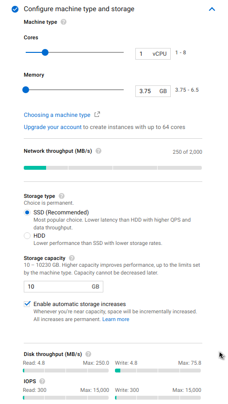
Click on Create.

You will be taken to the Instances page, where you will see your new instance with a spinner on the left, indicating it is still being created:
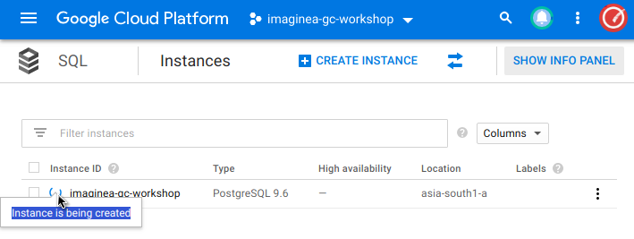
In two or three minutes, the instance will be available, and a green checkmark will replace the blue spinner. Make sure to refresh the page from time to time:
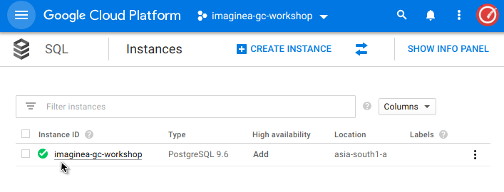
Your Cloud SQL instance is now ready to use.
Connection Options
Currently, there are 3 ways of connecting to Cloud SQL:
- Through Private IP Address on a VPC
- Through the Cloud SQL Proxy
- Through Public IP Address
Connection & Data Manipulation
Connection through Cloud Shell
Step 1
Activate Google Cloud Shell by pressing the prompt button in the Google Cloud Console.
Step 2
Connect to your Cloud SQL instance using the gcloud beta sql command shown below, but replace "imaginea-gc-workshop" with the name of your instance, if different and enter password
gcloud sql connect imaginea-gc-workshop --user=postgres
Command output
Whitelisting your IP for incoming connection for 5 minutes...done. Connecting to database with SQL user [postgres].Password for user postgres: psql (9.6.10, server 9.6.6) SSL connection (protocol: TLSv1.2, cipher: ECDHE-RSA-AES128-GCM-SHA256, bits: 128, compression: off) Type "help" for help. postgres=>
Run the following command in the cloud shell to create database
create database gc_demo;
Command output
CREATE DATABASE
Run the following command in the cloud shell to change database and enter the password in the prompt
\c gc_demo
Command output
CREATE DATABASE
Run the following commands to create and view tables.
# List available databases
\l
# List available tables
\dt
# List available schema in the connected database
\dn
CREATE TABLE guestbook (guestName VARCHAR(255), content VARCHAR(255), entryID SERIAL PRIMARY KEY);
INSERT INTO guestbook (guestName, content) values ('first guest', 'I got here!');
INSERT INTO guestbook (guestName, content) values ('second guest', 'Me too!');
SELECT * FROM guestbook;
Connection through Cloud SQL Proxy
The Cloud SQL Proxy is a secure way to connect to your Cloud SQL instance.
Step 1 - Install the Proxy
Download the Cloud SQL Proxy accordingly to your Operating System. In the following example we are using Linux 64-bit and make it executable with the following commands:
wget https://dl.google.com/cloudsql/cloud_sql_proxy.linux.amd64 -O cloud_sql_proxy chmod +x cloud_sql_proxy
Step 2 - Creating Service Account for use on the Proxy
In the Google Cloud Console, click the Menu icon on the top left of the screen and Scroll down and select IAM & ADMIN > Service Accounts.
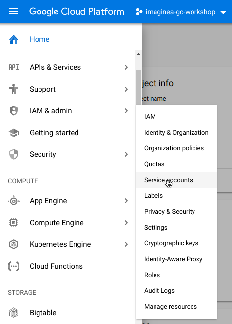
Click Create service account.
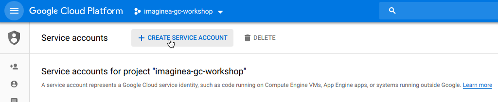
In the Create service account dialog, provide a descriptive name for the service account.
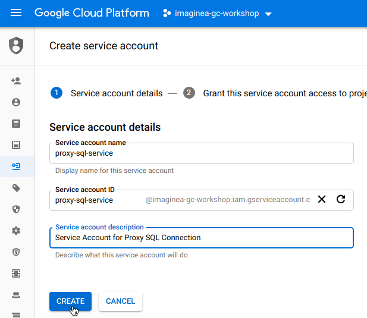
For Role, select one of the following roles:
- Cloud SQL > Cloud SQL Client
- Cloud SQL > Cloud SQL Editor
- Cloud SQL > Cloud SQL Admin
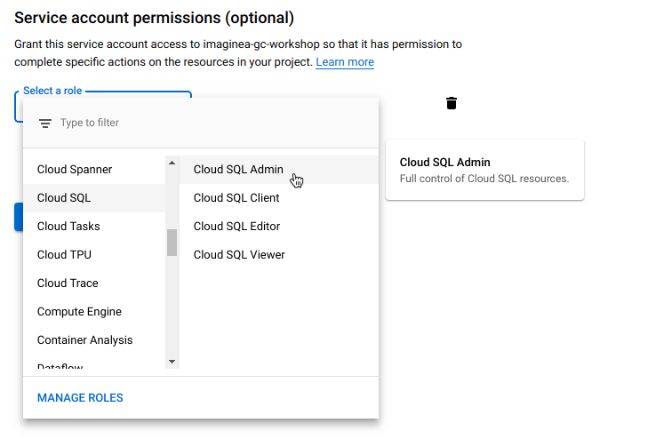
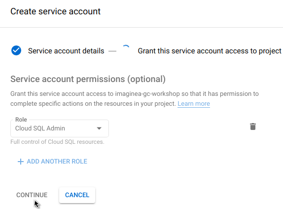
Click Create key and Choose JSON in the dialog. Click on create and download the JSON file. Keep the file Securely.
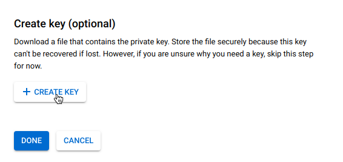

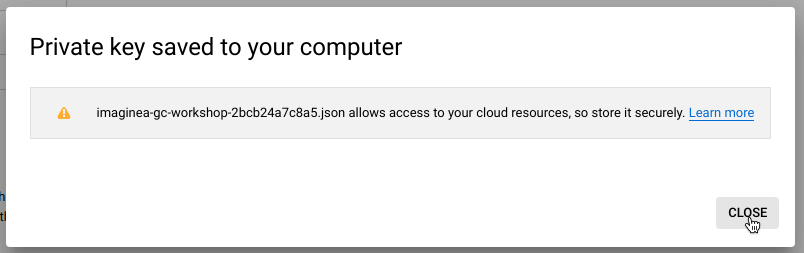
Click Create.
Step 3 - Start the proxy
Run the following command in your terminal to start the proxy.
./cloud_sql_proxy -instances=<INSTANCE_CONNECTION_NAME>=tcp:5432 \
-credential_file=<PATH_TO_KEY_FILE> &
Step 4 - Use PGAdmin to connect the proxy sql connection.
What is it?
Cloud Storage allows world-wide storage and retrieval of any amount of data at any time. You can use Cloud Storage for a range of scenarios including serving website content, storing data for archival and disaster recovery, or distributing large data objects to users via direct download.
Bucket Creation Using Console
Step 1
In the Google Cloud Console, click the Menu icon on the top left of the screen and Scroll down and select Storage > Browser in the Storage subsection
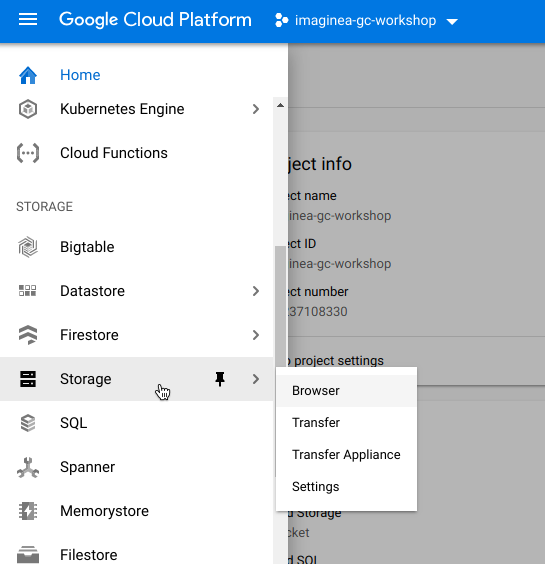
Step 2
Click on Create Bucket
Step 3
Name your bucket, it must be unique across all of GCP, not just your project. Then select Regional as the default storage class. Choose asia-south1 as your Region.
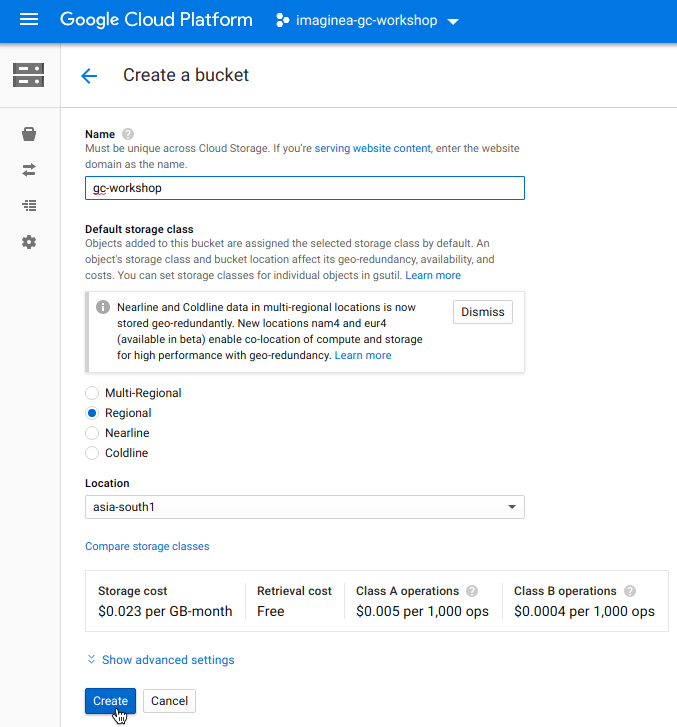
Step 4
You have now created your first bucket! Let's upload some files. You can upload whatever files you want to use.
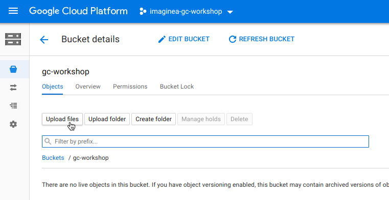
Step 5
You can Share your file with a specific user or Group or Public. By editing permission of the file you can do this.
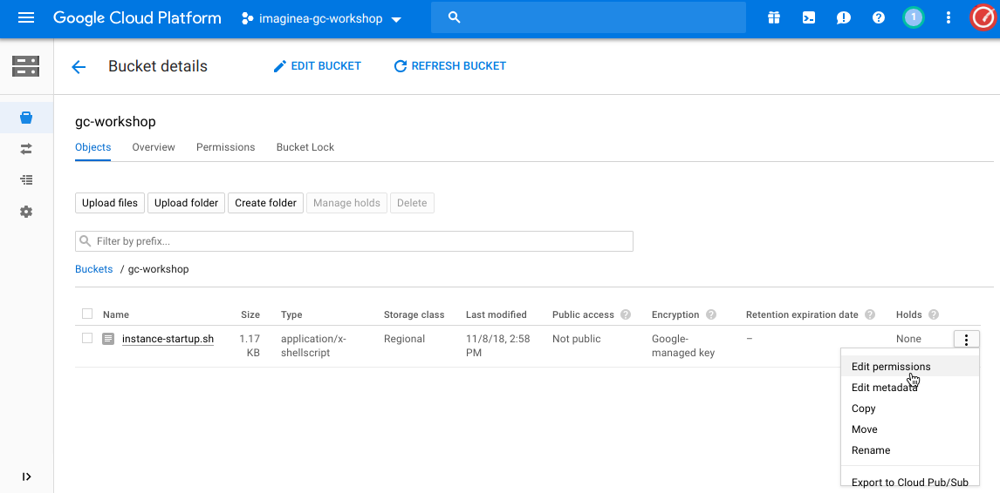
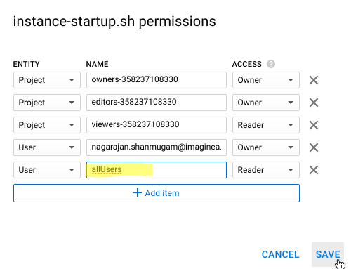
Create a second GCS bucket using the command line tool, gsutil
To create a second GCS bucket using the gsutil command use your local terminal environment with the GCP SDK installed, or use the Google Cloud Shell which has all of the SDK tools pre-installed.
Step 1
Open the Google Cloud Shell

Step 2
Use gsutil to create a new regional bucket in asia-south1
Run the following command in cloud console to create the bucket.
gsutil mb -c regional -l asia-south1 gs://<Bucket Name> Bucket Creation
Step 3
Use the gsutil cp command to copy the image from the location where you saved it to the bucket you created
gsutil cp Desktop/kitten.png gs://<Bucket Name>
Step 4
Use the gsutil ls command to list the contents at the top level of your bucket:
gsutil ls gs://<Bucket Name>
Introduction
Messaging is a technology that enables high-speed, asynchronous, program-to-program communication with reliable delivery. Programs communicate by sending packets of data called messages to each other. Google Cloud Pub/Sub is a fully-managed real-time messaging service that allows you to send and receive messages between independent applications.
Create a topic and subscription Using Console
In the Google Cloud Console, click the Menu icon on the top left of the screen and Scroll down and select Pub/Sub in the Bigdata subsection
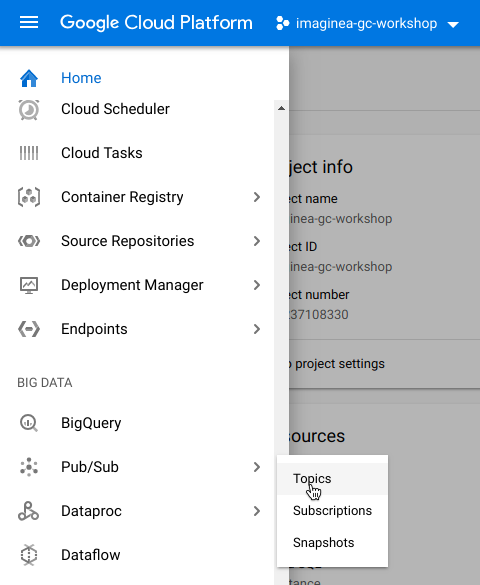
Click Enable API
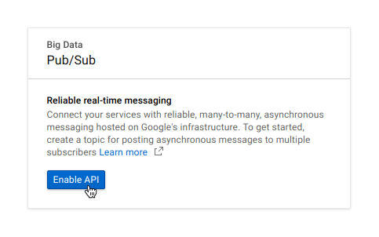
Click Create Topic
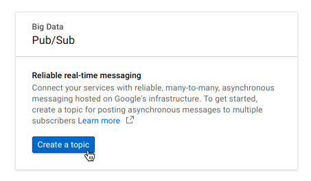
Type the name of the topic and then click Create.
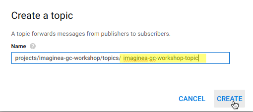
After the topic is created, remain on the Topics page. Look for the topic you just created, press the three vertical dots at the end of the line and click New Subscription.
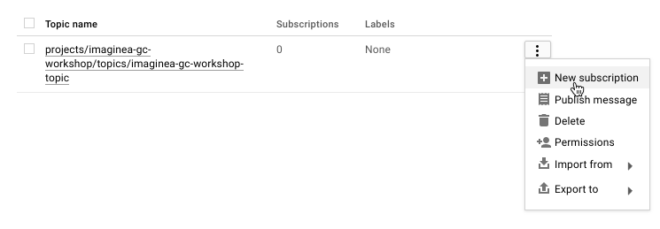
Type the subscription name in the text box and click Create.
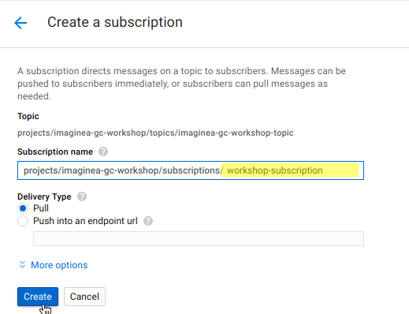
Create a topic and subscription Using Cloud Shell
From the te you just set up, create a topic.
gcloud pubsub topics create <Topic Name>
Create a subscription attached to this topic:
gcloud beta pubsub subscriptions create <Subscription Name> --topic <Topic Name>
Publish Message
In the Cloud Pub/Sub topics page, Look for the topic you just created, press the three vertical dots at the end of the line and click Publish Message
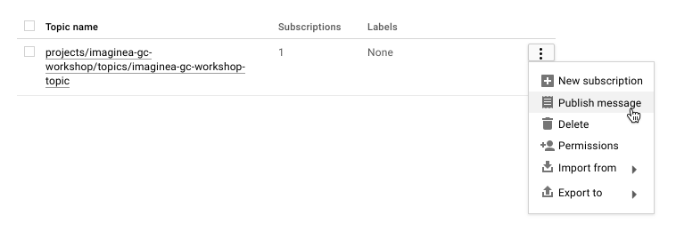
Enter Hello World in the Message field and Click Publish
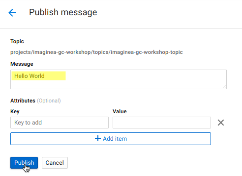
Pull Messages
Open the Cloud Shell and Enter the following
gcloud pubsub subscriptions pull --auto-ack <Subscription Name>
The message you sent appears in the DATA field of the command output.
┌─────────────┬─────────────────┬────────────┐ │ DATA │ MESSAGE_ID │ ATTRIBUTES │ ├─────────────┼─────────────────┼────────────┤ │ Hello World │ 287821426252241 │ │ └─────────────┴─────────────────┴────────────┘
Introduction
In this workshop, you will learn how to:
- Deploy your app to Google Compute Engine instances
- Set up load balancing and autoscaling for your app
Creating a build to upload to Cloud Storage
For the purposes of this workshop, you can build the release locally and upload it to Cloud Storage:
- Click the following link to download all the code for this workshop:
- Extract the source code.
- Open your terminal and go to the extracted folder
- Goto sample-app->java
- Build the Spring Boot application by running the following command from the root of your application folder
gradle clean build -x text
- Upload the app to Cloud Storage
gsutil cp build/libs.* gs://<BucketName>/demo.jar
Deploying your application to a single instance
Compute Engine instances might provide a startup script that is executed whenever the instance is started or restarted. You use this to install and start your app.
Enable required API's
In the Google Cloud Console, click the Menu icon on the top left of the screen and Scroll down and select APIs & Services > Dashboard.
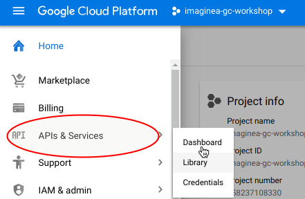
In the dashboard page Click on ENABLE APIS AND SERVICES
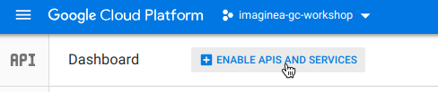
In the result window search for Following APIs and Enable it.
- Compute Engine API
- Cloud SQL Admin API
- Cloud Pub/Sub API
- Google Cloud Storage
- Google Cloud Storage JSON API
Create a startup script
Create and run your own startup scripts on your virtual machines to perform automated tasks every time your instance boots up. Create a file called instance-startup.sh in your application's root directory and copy the following content to it:
#!/bin/sh
# Set the metadata server to the get projct id
PROJECTID=$(curl -s "http://metadata.google.internal/computeMetadata/v1/project/project-id" -H "Metadata-Flavor: Google")
BUCKET=$(curl -s "http://metadata.google.internal/computeMetadata/v1/instance/attributes/BUCKET" -H "Metadata-Flavor: Google")
SQL_INSTANCE=$(curl -s "http://metadata.google.internal/computeMetadata/v1/instance/attributes/SQL_INSTANCE" -H "Metadata-Flavor: Google")
echo "Project ID: ${PROJECTID} Bucket: ${BUCKET}"
# Get the files we need
gsutil cp gs://${BUCKET}/demo.jar .
# Install dependencies
sudo apt-get update
sudo apt-get -y --force-yes install openjdk-8-jdk
# Make Java 8 default
sudo update-alternatives --set java /usr/lib/jvm/java-8-openjdk-amd64/jre/bin/java
# Download Cloud Proxy and make it executable
wget https://dl.google.com/cloudsql/cloud_sql_proxy.linux.amd64 -O cloud_sql_proxy
chmod +x cloud_sql_proxy
# Create Directory for Cloud Sql Proxy Connection
mkdir cloudsql; sudo chmod 777 cloudsql
export APPLICATION_STORAGE _BUCKET = ${BUCKET}
# Start the Cloud SQL Proxy in the background
./cloud_sql_proxy -dir=/cloudsql -instances=${SQL_INSTANCE}=tcp:5432 &
# Start server
java -jar demo.jar
Create and configure a Compute Engine instance Using Console
In the Google Cloud Console, click the Menu icon on the top left of the screen and Scroll down and select Compute Engine in the Compute subsection.
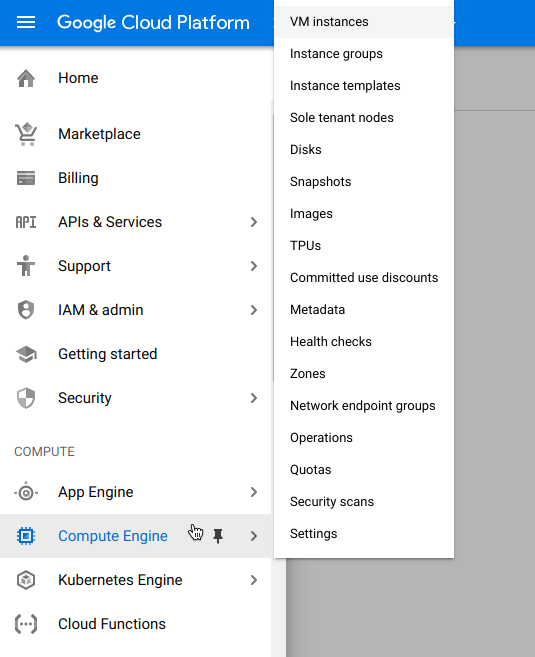
Click Create. It will take you to the Create instance Page
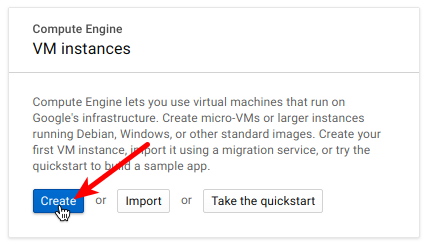
Here you must specify a name for your instance. Also you can select the Region, Zone, Machine Type, Boot Disk and Firewall options. And then expand the Management, Security.. link.
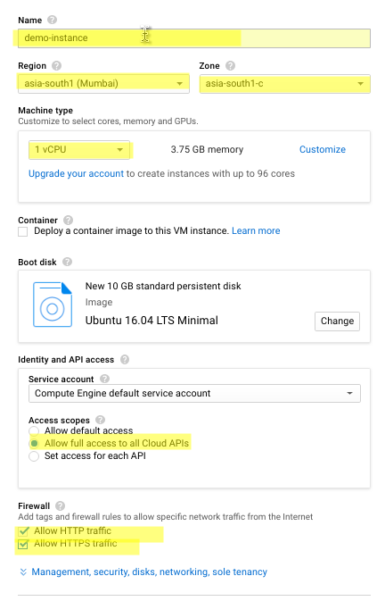
Configure the following values under Mangement > Metadata section
- startup-script-url=gs://<Bucket Name>/instance-startup.sh
- BUCKET=<Bucket Name>
- SQL_INSTANCE=<SQL Instance Connection Name>
- You can get this value Under CloudSQL> Instance> Connect to this Instance
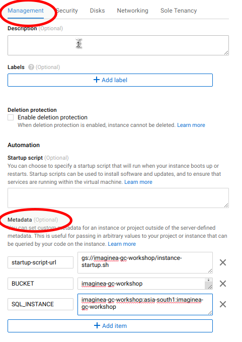
Once everything configured Click Create.
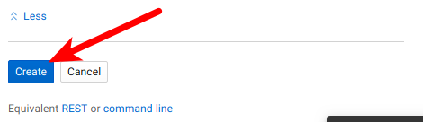
This will take you to the Instances Page and you can see your instance is getting created. Once its create you can see greed tick and your Public and Private IP of the Instance.
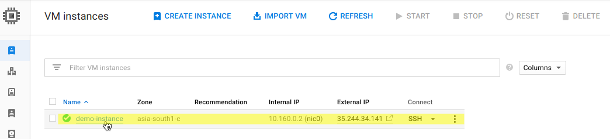
Copy the External IP and We can you it once our Firewall rule is enabled.
Create a firewall rule to allow traffic to your instance:
In the Google Cloud Console, click the Menu icon on the top left of the screen and Scroll down and select VPC network > Firewall rules in the NETWORKING subsection.
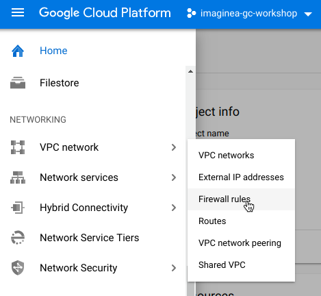
In the next Page Click CREATE FIREWALL RULE.
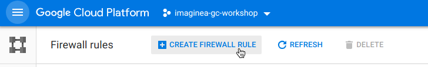
Enter the firewall rule name.
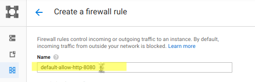
Configure Target tags as http-server and Source Ip ranges as 0.0.0.0/0. In Protocols and ports select tcp and five value as 8080.
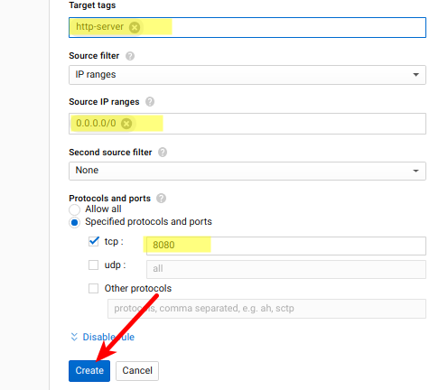
Click Create.
To see your application running, visit http://${IP_ADDRESS}:8080/swagger-ui.html, where ${IP_ADDRESS} is the external address you obtained above.
Create and configure a Compute Engine instance Using GCLOUD
To create a Compute Engine instance, perform the following steps:
- Create an instance by running the following command:
gcloud compute create demo-instance \ --image-project=ubuntu-os-cloud --image-family ubuntu-1604-lts \ --zone=asia-south1-b \ --machine-type=n1-standard-1 \ --metadata=BUCKET=imaginea-gc-workshop,SQL_INSTANCE=imaginea-gc-workshop:asia-south1:imaginea-gc-workshop,startup-script-url=gs://imaginea-gc-workshop/instance-startup.sh \ --scopes=userinfo-email,cloud-platform \ --tags=http-server
- This command creates a new instance named
demo-instance, grants it access to Cloud Platform services, and provides your startup script. It also sets an instance attribute with the Bucket name. - Check the progress of instance creation:
gcloud compute instances get-serial-port-output demo-instance \
--zone asia-south-b
- If the startup script has completed, this command returns
Finished running startup scripts. - Create a firewall rule to allow traffic to your instance:
gcloud compute firewall-rules create default-allow-http-8080 \
--allow tcp:8080 \
--source-ranges 0.0.0.0/0 \
--target-tags http-server \
--description "Allow port 8080 access to http-server"
- Get the external IP address of your instance:
gcloud compute instances list
- To see your application running, visit
http://${IP_ADDRESS}:8080/message, where${IP_ADDRESS}is the external address you obtained above.
Horizontal scaling with multiple instances
Compute Engine can easily scale horizontally. By using a managed instance group and the Compute Engine autoscaler, Compute Engine can automatically create new instances of your application when needed, and shut down instances when demand is low. You can set up an HTTP load balancer to distribute traffic to the instances in a managed instance group.
Create a managed instance group
A managed instance group is a group of homogeneous instances based on an instance template. In this section, you create a group of instances running your Spring Boot app.
- Create an instance template:
gcloud compute instance-templates create demo-template \
--image-project ubuntu-os-cloud \
--image-family ubuntu-1604-lts \
--zone asia-south1-b \
--machine-type n1-standard-1 \
--metadata BUCKET=imaginea-gc-workshop,SQL_INSTANCE=imaginea-gc-workshop:asia-south1:imaginea-gc-workshop,startup-script-url=gs://imaginea-gc-workshop/instance-startup.sh \
--scopes userinfo-email,cloud-platform \
--tags http-server
- Notice that the template provides most of the information needed to create instances.
- Next, create an instance group using the template:
gcloud compute instance-groups managed create demo-group \
--base-instance-name demo-group \
--size 2 \
--template demo-template \
--zone asia-south1-b
- The
sizeparameter specifies the number of instances in the group. You can set it to a different value as needed. - Get the names and external IP addresses of the created instances:
gcloud compute instances list
- The managed instances in the group have names that start with the base-instance-name, such as
demo-group.You can use the names to check the progress of instance creation as you did above with a single instance, and then you can use the IP addresses to see your application running on port 8080 of each instance.
Create a load balancer
In this section, you create a load balancer to direct traffic automatically to available instances in the group:
- Create a health check. The load balancer uses a health check to determine which instances are capable of serving traffic. The health check simply ensures that the server responds:
gcloud compute http-health-checks create demo-health-check \
--request-path /health \
--port 8080
- Create a named port. The HTTP load balancer directs traffic to a port named http, so we map that name to port 8080 to indicate that the instances listen on that port:
gcloud compute instance-groups managed set-named-ports demo-group \
--named-ports http:8080 \
--zone asia-south1-b
- Create a backend service. The backend service is the "target" for load-balanced traffic. It defines the instance group to which traffic should be directed, and which health check to use:
gcloud compute backend-services create demo-service \
--http-health-checks demo-health-check \
--global
- Add your instance group to the backend service:
gcloud compute backend-services add-backend demo-service \
--instance-group demo-group \
--global \
--instance-group-zone asia-south1-b
- Create a URL map. This defines which URLs should be directed to which backend services. In this sample, all traffic is served by one backend service. If you want to load balance requests between multiple regions or groups, you can create multiple backend services:
gcloud compute url-maps create demo-service-map \
--default-service demo-service
- Create a proxy that receives traffic and forwards it to backend services using the URL map:
gcloud compute target-http-proxies create demo-service-proxy \
--url-map demo-service-map
- Create a global forwarding rule. This ties a public IP address and port to a proxy:
gcloud compute forwarding-rules create demo-http-rule \
--target-http-proxy demo-service-proxy \
--ports 80 \
--global
- You are now done configuring the load balancer. It might take a few minutes for it to initialize and get ready to receive traffic. You can check on its progress by running the following command:
gcloud compute backend-services get-health demo-service \
--global
- Continue checking until it lists at least one instance in state HEALTHY.
- Get the forwarding IP address for the load balancer:
gcloud compute forwarding-rules list --global
- Your forwarding-rules IP address is in the IP_ADDRESS column.
- You can now enter the IP address into your browser and view your load-balanced and autoscaled app running on port 80!
Configure an autoscaler
As traffic to your site changes, you can adjust the instance group size manually, or you can configure an autoscaler to adjust the size automatically in response to traffic demands.
Create an autoscaler to monitor utilization and automatically create and delete instances up to a maximum of 10:
gcloud compute instance-groups managed set-autoscaling demo-group \
--max-num-replicas 10 \
--target-load-balancing-utilization 0.6 \
--zone asia-south1-b
After a few minutes, if you send traffic to the load balancer, you might see that additional instances have been added to the instance group.
A wide variety of autoscaling policies are available to maintain target CPU utilization and request-per-second rates across your instance groups. For more information, refer to Compute Engine's autoscaler documentation.